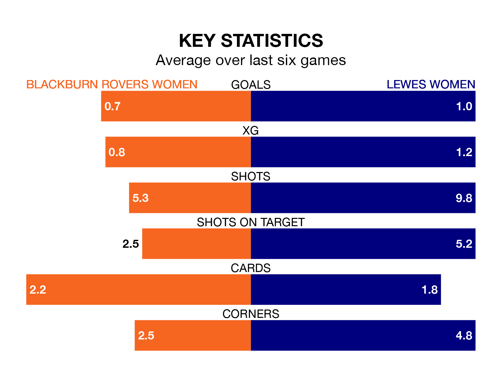

Struggling Lewes Women face Blackburn Rovers Women away at Lancashire FA County Ground on Sunday looking to build on a win in their last league outing.
After securing all three points with a 2-1 victory over London City Lionesses on November 19, Lewes sit 11th in the FA Women's Championship.
They travel to play a Blackburn Rovers side sixth in the standings, who also won their last match, 1-0 against Sunderland Women, on November 12.
With Alexandra Brooks between the sticks, Blackburn Rovers can rely on one of the league's safest pair of hands. She has kept four clean sheets in her 10 appearances this season, and only one other 'keeper – Sunderland Women's Claudia Moan – has been able to prevent the opposition scoring on more occasions in the FA Women's Championship.
In Lewes's net, Sophie Whitehouse has one clean sheet in nine games. She has conceded a goal every 62 minutes, 20% more often than the 75 minutes between goals for Brooks.
The hosts are in disappointing form in the FA Women's Championship, with two wins and four losses from their last six games.
And also with two wins and four losses over that period, the away team's form is identical – they have both taken six points from 18.
In the last three years, Blackburn Rovers and Lewes have played each other on six occasions. They won three each.
On average, Blackburn Rovers scored 0.7 goals and Lewes 0.8 in those matches.
Their last meeting was on October 1, when Blackburn Rovers won 2-0 away.
With seven goals in 11 games so far this season, Lewes are the league's lowest scorers with 0.6 goals per game. And they are conceding more than average, letting in 18 goals at a rate of 1.6 per game.
Blackburn Rovers are also below average scorers, with 0.8 goals per game, compared to a league average of 1.4. They have conceded 1.3 goals per game.
